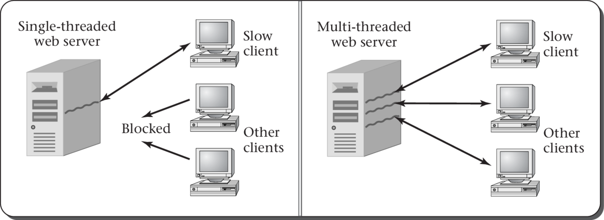

前面，跟大家简单地介绍了负载均衡和Nginx的一些基础配置（Nginx负载均衡配置实例），接下来，跟大家介绍一下Nginx的常用命令，便于日常的运维。
通过之前的学习，大家知道了如何配置并启动Nginx，但如果想停止Nginx服务，该如何操作呢？下面介绍停止Nginx的四种方法。
使用这种方法，会在进程完成当前工作后再停止
nginx -s quit这种方法比较暴力，不管进程是否在工作，直接停止进程
nginx -s stopsystemctl是Linux命令
systemctl stop nginx.service相对于stop的方式来的更加暴力，上述方法都无法停止时，使用此方法
killall nginx
Windows下直接双击nginx.exe即可，也可在命令行执行
nginxsystemctl start nginx.service一般都是执行“重新载入配置文件”命令，建议不要停止再重启，以防报错！
service nginx restart一般在修改完配置文件后执行此命令
nginx.exe -s reloadnetstat -tlnpps aux | grep nginx